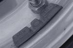

Технология шиномонтажа и балансировки
Снятие колеса с автомобиля;
Очистка диска от налипшей грязи;
Выпуск излишнего воздуха;
Установка колеса на шиномонтажный станок;
Нанесение специального раствором на покрышку по ободу;
Демонтаж старых грузиков;
Демонтаж старого колеса;
Монтаж нового колеса;
Подкачка шины колеса до давления, указанного Заводом-Изготовителем в технической документации;
Снятие колеса с шиномонтажного станка;
Колесо устанавливается на балансировочный станок;
Колесо раскручивается;
На экране монитора показывается на какое место слева и справа необходимо установить балансировочные грузы определенного веса;
Установка грузов определенного веса;
Колесо раскручивается;
На экране монитора контролируется правильность установки грузов;
Снятие колеса с балансировочного станка.
ВНИМАНИЕ!! После того, как в шиномонтажной мастерской вам сделали балансировку колес, обратите внимание, как установлены балансировочные грузы. Они ни при каких случаях не должны далеко стоять друг от друга на одной стороне диска. Это явная ошибка балансировки. Весь вес грузиков должен быть сконцентрирован в одном месте.
